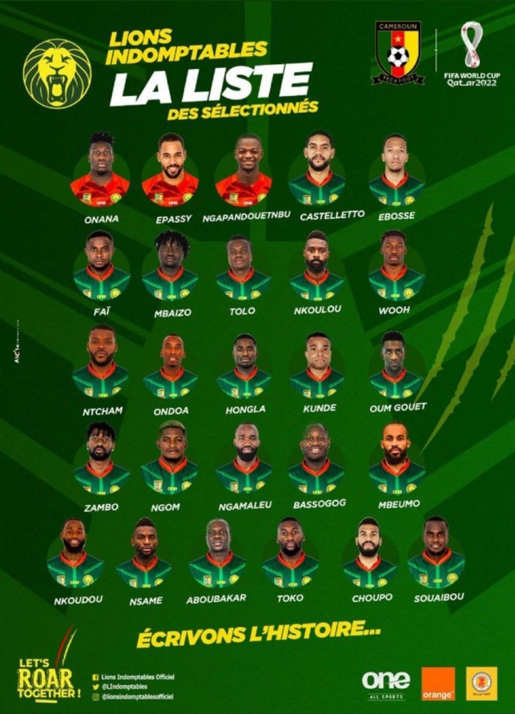
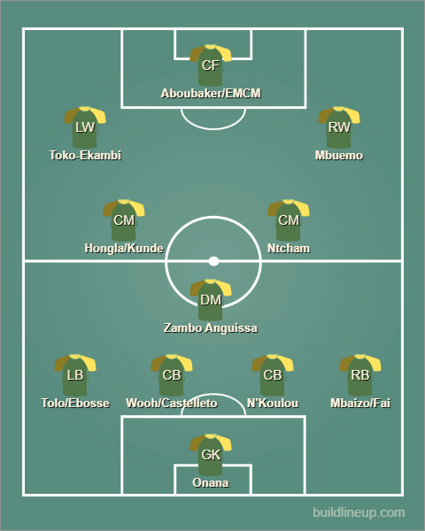

Squad Reaction - Cameroon

Fairly normal squad you could say. I am excited to see how Choupo-Moting will perform after being in form for Bayern but I don’t know if the coach will play him ahead of Aboubakar cause he is the captain of the team. Maybe he may play at LW but they already got Toko-Ekambi there and Mbuemo is a lock-in at RW. In midfield, the likes of Zambo Anguissa will be vital in shielding the defense. He has had a good season with Napoli so hoping he does well. Ntcham is one of the CM ahead of him along with maybe Hongla or Kunde. In defense, we have the experience of N’Koulou and youth in Wooh. In GK it’s for sure going to be Onana(Although I would like to see the third GK play to see the commentator struggle).
I think the lineup will look something like this. I don’t know if this is how they usually play but this is the best from what they have got:

EMCM - Eric Maxim Choup-Moting